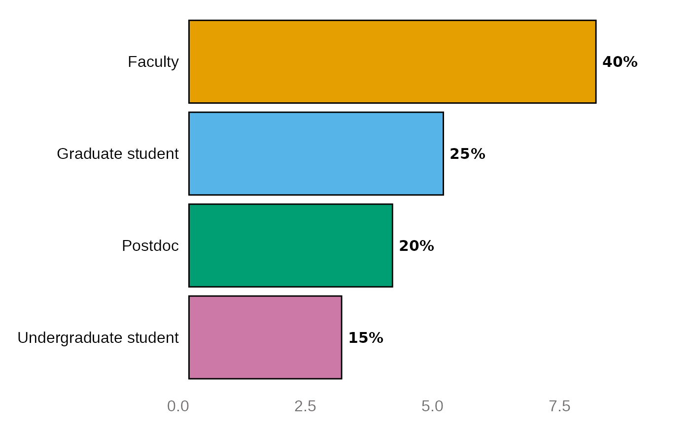

Horizontal Bar Chart for Blackstone Research and Evaluation
Source:R/horzBarChart.R
horzBarChart.RdhorzBarChart() creates a horizontal bar chart and returns a ggplot object with Blackstone Research and Evaluation branding.
Arguments
- df
Required, a tibble/data frame that has been pre-processed with dataSumm().
- scale_colors
Required, a character vector of the colors for the scale items.
- width
Input a value between 0.3 and 0.8 to set the thickness of the bars. Default is NULL.
Value
A ggplot2 object that plots the items into a horizontal bar chart and can be exported.
Examples
data <- dplyr::tibble(
role = c(
"Faculty", "Postdoc", "Undergraduate student", "Graduate student",
"Graduate student", "Postdoc", "Postdoc", "Faculty",
"Faculty", "Graduate student", "Graduate student", "Postdoc",
"Faculty", "Faculty", "Faculty", "Faculty", "Faculty", "Graduate student",
"Undergraduate student", "Undergraduate student"
)
)
role_summ <- data %>%
dplyr::select(role) %>%
blackstone::dataSumm()
role_color <- c("#2C2C4F", "#4B9FA6", "#79AB53", "#767171")
horzBarChart(df = role_summ, scale_colors = role_color, width = 0.6)
